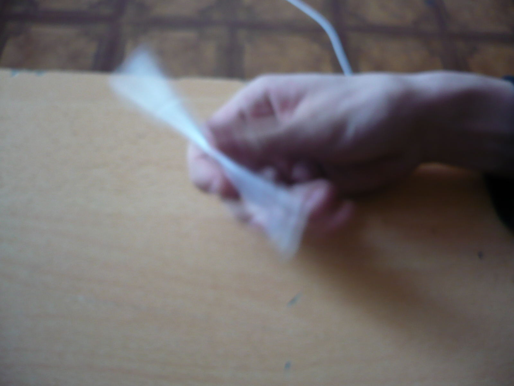
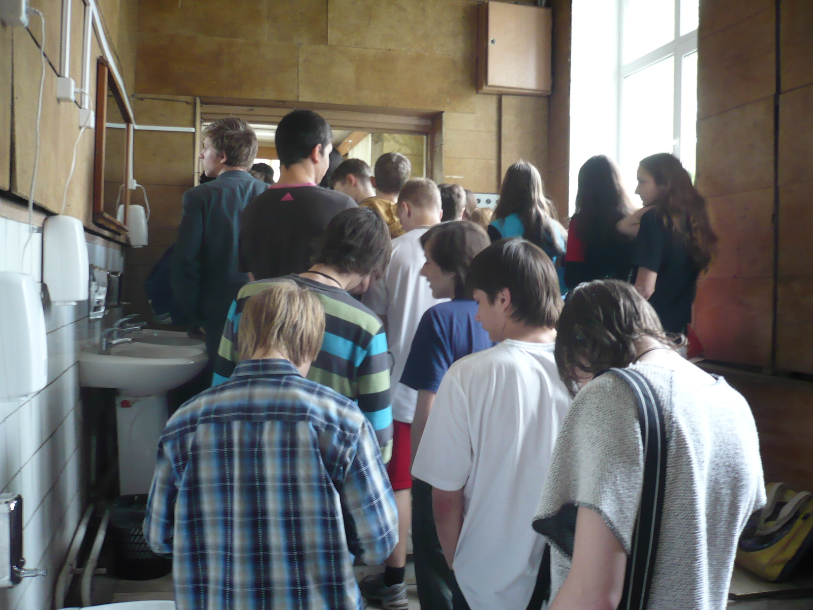
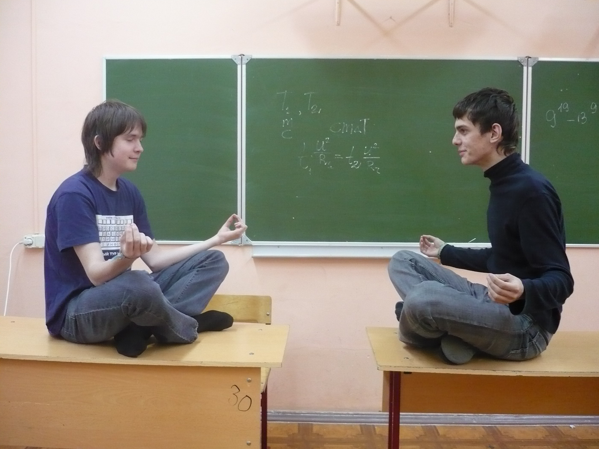
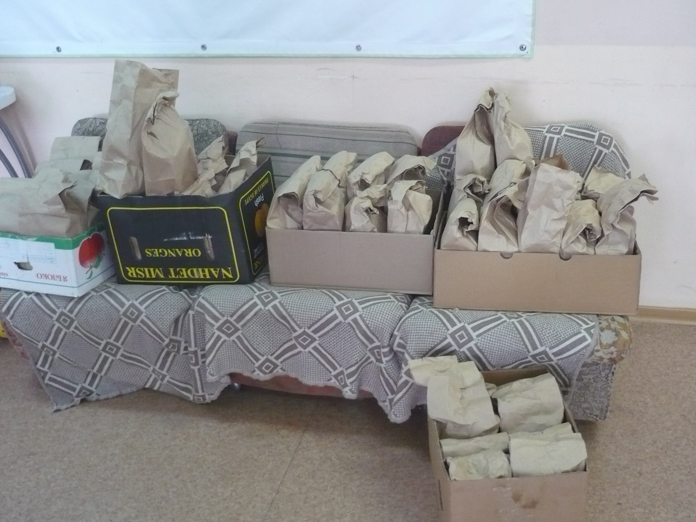
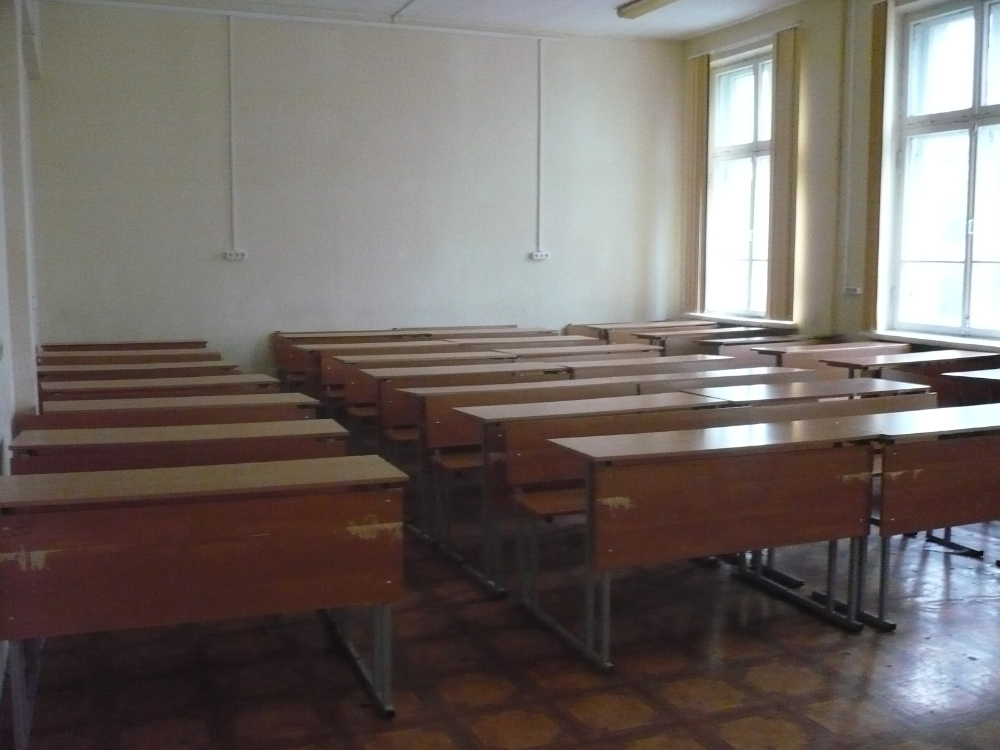

| Роль стадного чувства в жизни учащихся СУНЦ МГУ |

|
Посвящение в тайны СУНЦа...
Здесь вы видите применение списка в языке html:
Крутится, вертится...
Кручение ручек - увлечение почти всех учащихся СУНЦ МГУ, которое кто-то занес из другой школы, а потом оно прижилось и здесь. Обычно ручки крутят так: ручка зажимается большим пальцем с одной стороны, а указательным и средним - с другой. Затем, средним пальцем резко делается толчок ручки так, чтобы ручка обогнула большой палец и попала в промежуток между большим и средним пальцем. В этот момент нужно поймать ручку большим и указательным пальцем.
Передача этого умения идет практически из поколения в поколение - новички видят стариков, которые поголовно крутят ручки и тоже хотят научиться. Таким образом мы сталкиваемся с наследственным видом стадного инстинкта. Также, некоторые новички умеют крутить ручки до приезда в СУНЦ. Тогда они, обычно, тоже способствуют распространению увлечения. Основной противник этого увлечения - Лилия Михайловна, которая считает, что кручение ручки ведет к отмиранию клеток головного мозга. Но куда ж бороться Лилии Михайловне со Стадным Инстинктом™.
Некоторые ученики учатся делать более сложные трюки, но тут мы сталкиваемся с видом стадного инстинкта, который называется отмирающим, инстинкт ничегонеделания оказывается сильнее стадного.
Кормушка
Ежедневно, в 14:05, в СУНЦе раздается пронзительный звонок, который буквально через несколько мгновений заглушается громким криком со всех сторон. Начинается самое главное событие за день - сунцов кормят. В этот момент самые быстрые из них срываются со своих мест и бегут в столовую. Остальные же, повинуясь стадному инстинкту, следуют за ними. Менее чем через минуту все учащиеся СУНЦа собираются у входа в это священное место, и тогда здесь можно наблюдать такое грандиозное явление, как очередь(а еще и стек иногда) - воплощение толпы стадного инстинкта СУНЦа. В это время перед входом разворачивается гранциозная борьба толпы сунцов и дежурных, находящихся под гнётом дежурного воспитателя, который заставляет их работать и не пускать остальных сунцов в столовую. Также он их пытает, не давая им есть до того, пока не поедят все остальные. Из-за явного неравенства сил и явной деморализацией дежурных, они постепенно проигрывают голодной толпе.
Аналогичное по масштабам явление происходит в 11:15, во время второго завтрака. С недавних пор там ввели даже очередь. Более слабые проявления также можно наблюдать во время завтрака(7:50) и ужина (19:00).
Влом
Влом или инстинкт ничегонеделания - основной противник стадного инстинкта за управление действиями сунцов. Этот инстинкт, который заставляет их не делать ничего. Например: если сунцу задано много уроков, то он не будет их делать, а, например, пойдет гамать. Причем вероятность забивания прямо пропорциональна количеству заданных уроков. Также возможен частичный влом. Например сунец час делает уроки, а потом ему влом. Частичный влом бывает абсолютный и относительный. Абсолютный влом измеряется в сек-1 и равен 1/(количество секунд до влома). Относительный влом измеряется в процентах и равен отношению забитой части работы к общей. Также рассматриваем общий показатель влома, который равен вероятности полного влома в расчете на 1 час работы. Стандартные показатели влома для сунцов - 371мкГц для абсолютного влома, 79% для относительного и 33% для полного. Сунцы, превышающие эти нормативы называют вломщиками.
Данные показатели приведены без рассмотрения явления стадного инстинкта. Стадный инстинкт, обычно, повышает все показатели влома. Например, кто-то забил на домашнее задание. Тогда все, кто это видит, задумывается о реальной необходимости этого задания. Задумчивость, как известно, процесс рандомизированный, у каждого решения есть ненулевая вероятность, каждая задумчивость независима от других. При этом, как только в голову сунцу придет решение забить, он тут же его выполнит(принцип сверхвыбора). В этой модели мы видим монотонно растющую зависимость влома сунца от времени, которая складывается с собственным показателем влома и увеличивает его. Таким образом, явление влома в СУНЦ МГУ является следствием явления стадного инстинкта.
Халява
Есть такая старая традиция - в ночь перед экзаменом в 00:00 надо высунуться в окно, прокричать "Халява, ловись" и хлопнуть ученичкой. Ученики СУНЦа верят, что, таким образом кусочек халявы теперь пойман в ученичке и он поможет вытащить халявный билет. Эта традиция имеет большое значение для школы, ведь у большого количества учеников резко повышается успеваемость на экзаменах. К сожалению, администрация СУНЦа видит в этом только свою заслугу и борется с этой традицией. Эта традиция пришла от студентов, которые учились в СУНЦе и которые иногда туда заходят (их называют супера). Так эта традиция перекочевала в школу. Но стадный инстинкт проявляется не только в появлении и распространении традиции. Когда кто-то кричит в окно "Халява, ловись", все сунцы это слышат и начинают думать, а не надо ли и им кусочек халявы. В этот момент СУНЦ подобен лавине: сначала один крик, потом другой, потом еще несколько, и так, со всех сторон, все громче и чаще слышны эти два слова. Стандартный экзамен соскребает недельные накопления халявы в радиусе двух километров от СУНЦа.
Обязательные лекции
|  |
|
|
Обязательные лекции - единственное событие в СУНЦе, где стадный инстинкт совершенно неуместен. Здесь мы сталкиваемся с искусственным созданием стадного инстинкта. Происходит это так. Какой-нибудь умный человек приезжает в СУНЦ с целью провести лекцию. Тогда администрация школы в лице Валентины Михайловны Кругловой загоняет всех сунцов в актовый зал. Итого, в актовом зале налицо стадный инстинкт, вызванный не внутренними побуждениями, а внешним воздействием. Но, как и все искусственные инстинкты, этот сталкивается с антиинстинктом уже естественного происхождения. Сунцы повально сбегают с таких лекций. Стадный инстинкт проявляет себя в виде уловок, с помощью которых сунцы пробивают эту лекцию. Например, выйти в туалет с лекции(часа на 3), уснуть, прятаться в шкафах, на шкафах, под кроватями, на люстре(???), притворяются, что учатся, уходят заранее в город и еще много способов.